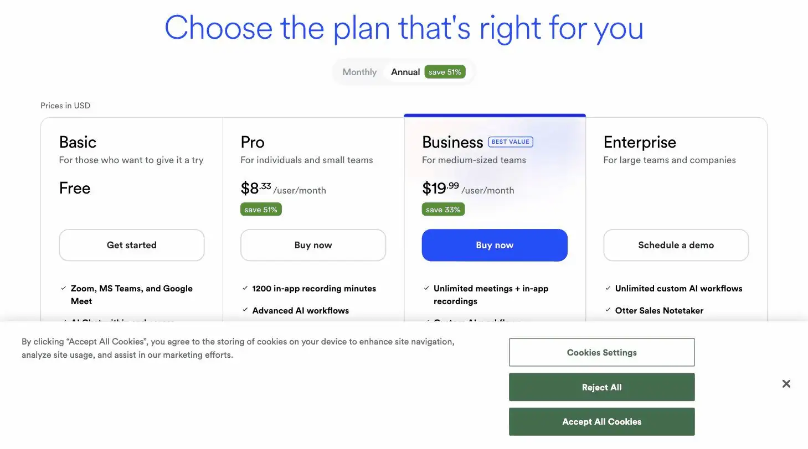
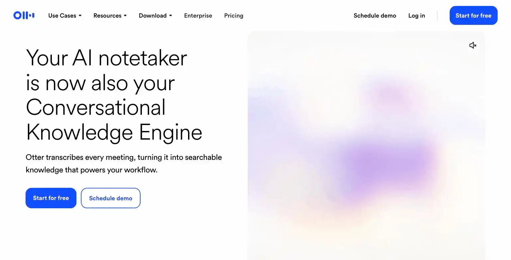

Otter.ai
Otter.ai is a real-time AI meeting transcription and summarization tool, best for solopreneurs running frequent client or discovery calls. Ranked #4 on Solos Gems (8.0/10) at $8.33-$16.99/month for the Pro plan, the site's verdict is to get Pro, not Business, since Business bills a 5-seat minimum even for a team of one.
- Value for price7.5/10
- Capability8/10
- Ease of use8.5/10
- Trial safety8/10

Otter transcribes and summarizes calls in real time, which matters most for solopreneurs who are on video calls all day and don't have anyone else to take notes while they run the meeting.

The "Ask Otter anything" chat (shown above) searches across every past meeting Otter has transcribed, so you can ask what was agreed last week instead of re-reading transcripts, a capability most basic transcription tools don't offer.
Example from otter.ai. Not independently tested by Solos Gems.Pricing breakdown
- Basic (Free): 300 transcription minutes/month, 30-minute cap per conversation, 3 lifetime file imports
- Pro: $16.99/month, or $8.33/month billed annually ($99.96/year); 1,200 in-app recording minutes/month, 10 file imports/month, advanced AI workflows, meeting templates
- Business: $30/month, or $19.99/month billed annually; unlimited transcription minutes, 4-hour per-meeting cap, 3 concurrent meetings, priority support, but bills a minimum of 5 seats even for a smaller team
- Enterprise: custom pricing; the only tier with Otter Sales Notetaker
The seat-minimum trap
The Business plan's per-seat price looks close enough to Pro that it's tempting to "upgrade" for unlimited minutes, but Otter bills Business at a 5-seat minimum regardless of team size. For a solo operator, that means paying for four seats you'll never use. Unless you're consistently blowing past 1,200 minutes a month (20 hours of calls), Pro is the better deal by a wide margin.
Pros
- Real-time transcription frees you up to actually run the call instead of typing notes
- Annual Pro pricing is genuinely cheap for what it replaces (a part-time notetaker)
- Meeting templates and summaries cut down post-call admin work
Cons
- 1,200 minutes/month on Pro can get tight if you're doing back-to-back client calls
- Business plan's 5-seat minimum makes it a bad deal for solo users
- Accuracy drops on calls with heavy accents, crosstalk, or poor audio: worth testing on your own calls before committing to annual billing
See how this compares to Fireflies.ai →